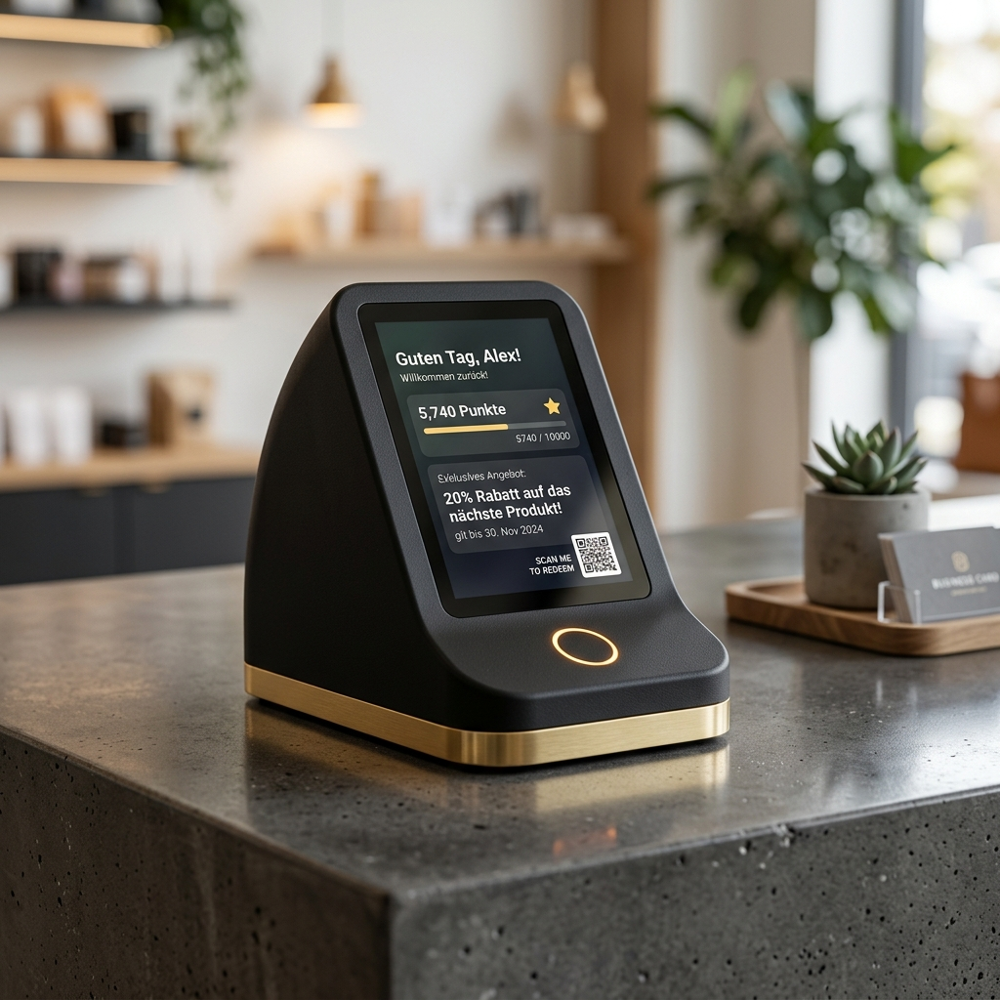

Helden-Konzept
Lade Daten...
Beschreibung wird geladen...
| Kunden-Interaktion (UX) | Wird geladen... |
| Marketing-Nutzen (ROI) | Wird geladen... |
| Nachhaltigkeit & Story | Wird geladen... |
| Filialname | Adresse (Eingabe) | GPS (Lat, Lng) | Geokodierung | Gegenprüfung | Aktion |
|---|
Unsere Software-Lösungen wie PromoMap Pro machen komplexe Datenströme digital sichtbar. Doch echte, emotionale Markenbindung entsteht erst, wenn Kunden Ihre Identität berühren können. 3NC verbindet digitale Intelligenz mit präziser additiver Fertigung zu einer neuen Klasse haptischer, intelligenter Marketing-Tools.
Präsentation maßgeschneiderter, FDM/SLA-3D-druckbarer Giveaways für unsere Kunden. Jedes Konzept ist für kostengünstige Produktion (passive NFC-Tags) und deutsches Recht (BattG/ElektroG-frei) optimiert.
Beschreibung wird geladen...
| Kunden-Interaktion (UX) | Wird geladen... |
| Marketing-Nutzen (ROI) | Wird geladen... |
| Nachhaltigkeit & Story | Wird geladen... |
Maßgeschneiderte Systemlösungen zur physischen Visualisierung von KPIs und Datenströmen. Wir verbinden Ihre bestehende Software-Infrastruktur mit edlem, additiv gefertigtem B2B-Equipment.

„Dein KPI-Dashboard, das nur du kennst."
Ein exklusives B2B-Informationsdisplay, das sich harmonisch in die anspruchsvolle Ästhetik moderner Chefbüros einfügt. Auf Knopfdruck oder Geste fährt das System geräuschlos aus der Tischplatte empor und liefert Führungskräften diskret die wichtigsten Unternehmens-KPIs in Echtzeit.
Aktivierung wahlweise via NFC-Schlüssel, mmWave-Präsenzerkennung, Klopf-Muster oder unsichtbarem Sensor.
Ein dedizierter physischer Taster fährt den Bildschirm bei Bedarf blitzschnell, lautlos und sicher wieder ein.
| Bedienelement | Nutzen / Datenstrom |
|---|---|
| Taster 1 – Finance | Umsatz, EBITDA, operativer Cashflow und Budgetabgleich |
| Taster 2 – Sales | Pipeline-Status, Conversion-Rate sowie CAC & LTV-Verlauf |
| Taster 3 – People | Fluktuationsquote, Engagement-Score und offene Vakanzen |
| Taster 4 – Ops | Projekt-Profitabilität, Auslastung und Prozesszeiten |
| Taster 5 – Retract | System sicher einfahren und mechanisch verriegeln |

„Spielerisch motivieren, leise analysieren."
Stärken Sie den Teamgeist und optimieren Sie die interne Kommunikation spielerisch. Das interaktive Terminal im Pausenraum verbindet Schichtpläne und wichtige Ankündigungen mit personalisierten Dashboards bei kontaktlosem Scan.
Freischaltbare Meilensteine, tägliche Ziele und Teambeiträge fördern die tägliche aktive Nutzung.
Einfache, anonyme Stimmungsabfrage per 1-Tap-Smiley direkt am Terminal. Vollständig offline gehostet.

„Kundenbindung physisch erlebbar machen."
Verbinden Sie den physischen POS nahtlos mit Ihren digitalen Kampagnen. Das Loyalty Terminal lenkt die Blicke am Tresen auf sich, belohnt treue Kunden bei kontaktloser Annäherung und sammelt wertvolles Echtzeit-Feedback.
Sofortige optische Bestätigung und Anzeige des aktuellen Punktestands oder Gewinns bei Annäherung.
Erzeugung von dynamischen QR-Codes für direkte Rabatte oder schnelle Zufriedenheits-Votings.
Ein Lithophan (aus dem Griechischen: lithos „Stein“ und phanein „erscheinen/leuchten“) ist ein kunstvolles Lichtbild-Verfahren, das durch hochpräzisen 3D-Druck neu belebt wird. Es handelt sich um ein plastisches Relief aus lichtdurchlässigem Material, das erst bei einer Durchleuchtung von hinten sein wahres Gesicht zeigt.
Da dünnere Schichten mehr Licht hindurchlassen als dickere Schichten, übersetzt das Relief die Helligkeitswerte eines Bildes perfekt in haptische Konturen. Ohne rückwärtiges Licht wirkt das Lithophan wie eine strukturierte weiße Oberfläche (eine reine Textur-Simulation). Schaltet man das Licht ein, entsteht ein kontrastreiches, lebendiges Bild mit faszinierender Tiefe.
Neben klassischen flachen Reliefs zur Wandmontage oder in Leuchtrahmen lässt sich das Verfahren auf kreative Geometrien übertragen: Gebogene Aufsteller bieten durch ihre Wölbung Eigenstabilität und eignen sich hervorragend für Tischaufsteller, während zylindrische Formen (im Stile einer Litfaßsäule) als 360°-Lampenschirme eingesetzt werden, bei denen eine innere LED-Säule das Motiv rundherum gleichmäßig beleuchtet.